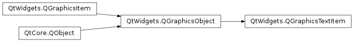

QGraphicsTextItem¶
Synopsis¶
Functions¶
- def
adjustSize() - def
defaultTextColor() - def
document() - def
font() - def
openExternalLinks() - def
setDefaultTextColor(c) - def
setDocument(document) - def
setFont(font) - def
setHtml(html) - def
setOpenExternalLinks(open) - def
setPlainText(text) - def
setTabChangesFocus(b) - def
setTextCursor(cursor) - def
setTextInteractionFlags(flags) - def
setTextWidth(width) - def
tabChangesFocus() - def
textCursor() - def
textInteractionFlags() - def
textWidth() - def
toHtml() - def
toPlainText()
Signals¶
- def
linkActivated(arg__1) - def
linkHovered(arg__1)
Detailed Description¶
The
PySide2.QtWidgets.QGraphicsTextItemclass provides a text item that you can add to aPySide2.QtWidgets.QGraphicsSceneto display formatted text.If you only need to show plain text in an item, consider using
PySide2.QtWidgets.QGraphicsSimpleTextIteminstead.To set the item’s text, pass a
PySide2.QtCore.QStringtoPySide2.QtWidgets.QGraphicsTextItem‘s constructor, or callPySide2.QtWidgets.QGraphicsTextItem.setHtml()/PySide2.QtWidgets.QGraphicsTextItem.setPlainText().
PySide2.QtWidgets.QGraphicsTextItemuses the text’s formatted size and the associated font to provide a reasonable implementation ofPySide2.QtWidgets.QGraphicsTextItem.boundingRect(),PySide2.QtWidgets.QGraphicsTextItem.shape(), andPySide2.QtWidgets.QGraphicsTextItem.contains(). You can set the font by callingPySide2.QtWidgets.QGraphicsTextItem.setFont().It is possible to make the item editable by setting the
Qt.TextEditorInteractionflag usingPySide2.QtWidgets.QGraphicsTextItem.setTextInteractionFlags().The item’s preferred text width can be set using
PySide2.QtWidgets.QGraphicsTextItem.setTextWidth()and obtained usingPySide2.QtWidgets.QGraphicsTextItem.textWidth().Note
In order to align HTML text in the center, the item’s text width must be set. Otherwise, you can call
PySide2.QtWidgets.QGraphicsTextItem.adjustSize()after setting the item’s text.
Note
PySide2.QtWidgets.QGraphicsTextItemacceptshover eventsby default. You can change this withPySide2.QtWidgets.QGraphicsItem.setAcceptHoverEvents().
-
class
PySide2.QtWidgets.QGraphicsTextItem([parent=nullptr])¶ -
class
PySide2.QtWidgets.QGraphicsTextItem(text[, parent=nullptr]) Parameters: - text – unicode
- parent –
PySide2.QtWidgets.QGraphicsItem
Constructs a
PySide2.QtWidgets.QGraphicsTextItem.parentis passed toPySide2.QtWidgets.QGraphicsItem‘s constructor.See also
Constructs a
PySide2.QtWidgets.QGraphicsTextItem, usingtextas the default plain text.parentis passed toPySide2.QtWidgets.QGraphicsItem‘s constructor.See also
-
PySide2.QtWidgets.QGraphicsTextItem.adjustSize()¶ Adjusts the text item to a reasonable size.
-
PySide2.QtWidgets.QGraphicsTextItem.defaultTextColor()¶ Return type: PySide2.QtGui.QColorReturns the default text color that is used for unformatted text.
-
PySide2.QtWidgets.QGraphicsTextItem.document()¶ Return type: PySide2.QtGui.QTextDocumentReturns the item’s text document.
-
PySide2.QtWidgets.QGraphicsTextItem.font()¶ Return type: PySide2.QtGui.QFontReturns the item’s font, which is used to render the text.
-
PySide2.QtWidgets.QGraphicsTextItem.linkActivated(arg__1)¶ Parameters: arg__1 – unicode
-
PySide2.QtWidgets.QGraphicsTextItem.linkHovered(arg__1)¶ Parameters: arg__1 – unicode
-
PySide2.QtWidgets.QGraphicsTextItem.openExternalLinks()¶ Return type: PySide2.QtCore.bool
-
PySide2.QtWidgets.QGraphicsTextItem.setDefaultTextColor(c)¶ Parameters: c – PySide2.QtGui.QColorSets the color for unformatted text to
col.
-
PySide2.QtWidgets.QGraphicsTextItem.setDocument(document)¶ Parameters: document – PySide2.QtGui.QTextDocumentSets the text document
documenton the item.
-
PySide2.QtWidgets.QGraphicsTextItem.setFont(font)¶ Parameters: font – PySide2.QtGui.QFontSets the font used to render the text item to
font.
-
PySide2.QtWidgets.QGraphicsTextItem.setHtml(html)¶ Parameters: html – unicode Sets the item’s text to
text, assuming that text is HTML formatted. If the item has keyboard input focus, this function will also callPySide2.QtWidgets.QGraphicsItem.ensureVisible()to ensure that the text is visible in all viewports.
-
PySide2.QtWidgets.QGraphicsTextItem.setOpenExternalLinks(open)¶ Parameters: open – PySide2.QtCore.bool
-
PySide2.QtWidgets.QGraphicsTextItem.setPlainText(text)¶ Parameters: text – unicode Sets the item’s text to
text. If the item has keyboard input focus, this function will also callPySide2.QtWidgets.QGraphicsItem.ensureVisible()to ensure that the text is visible in all viewports.
-
PySide2.QtWidgets.QGraphicsTextItem.setTabChangesFocus(b)¶ Parameters: b – PySide2.QtCore.boolIf
bis true, the Tab key will cause the widget to change focus; otherwise, the tab key will insert a tab into the document.In some occasions text edits should not allow the user to input tabulators or change indentation using the Tab key, as this breaks the focus chain. The default is false.
-
PySide2.QtWidgets.QGraphicsTextItem.setTextCursor(cursor)¶ Parameters: cursor – PySide2.QtGui.QTextCursor
-
PySide2.QtWidgets.QGraphicsTextItem.setTextInteractionFlags(flags)¶ Parameters: flags – PySide2.QtCore.Qt.TextInteractionFlagsSets the flags
flagsto specify how the text item should react to user input.The default for a
PySide2.QtWidgets.QGraphicsTextItemisQt.NoTextInteraction. This function also affects theItemIsFocusablePySide2.QtWidgets.QGraphicsItemflag by setting it ifflagsis different fromQt.NoTextInteractionand clearing it otherwise.By default, the text is read-only. To transform the item into an editor, set the
Qt.TextEditableflag.
-
PySide2.QtWidgets.QGraphicsTextItem.setTextWidth(width)¶ Parameters: width – PySide2.QtCore.qrealSets the preferred width for the item’s text. If the actual text is wider than the specified width then it will be broken into multiple lines.
If
widthis set to -1 then the text will not be broken into multiple lines unless it is enforced through an explicit line break or a new paragraph.The default value is -1.
Note that
PySide2.QtWidgets.QGraphicsTextItemkeeps aPySide2.QtGui.QTextDocumentinternally, which is used to calculate the text width.See also
PySide2.QtWidgets.QGraphicsTextItem.textWidth()QTextDocument.setTextWidth()
-
PySide2.QtWidgets.QGraphicsTextItem.tabChangesFocus()¶ Return type: PySide2.QtCore.boolReturns
trueif the Tab key will cause the widget to change focus; otherwise, false is returned.By default, this behavior is disabled, and this function will return false.
-
PySide2.QtWidgets.QGraphicsTextItem.textCursor()¶ Return type: PySide2.QtGui.QTextCursor
-
PySide2.QtWidgets.QGraphicsTextItem.textInteractionFlags()¶ Return type: PySide2.QtCore.Qt.TextInteractionFlagsReturns the current text interaction flags.
-
PySide2.QtWidgets.QGraphicsTextItem.textWidth()¶ Return type: PySide2.QtCore.qrealReturns the text width.
The width is calculated with the
PySide2.QtGui.QTextDocumentthatPySide2.QtWidgets.QGraphicsTextItemkeeps internally.See also
PySide2.QtWidgets.QGraphicsTextItem.setTextWidth()QTextDocument.textWidth()
-
PySide2.QtWidgets.QGraphicsTextItem.toHtml()¶ Return type: unicode Returns the item’s text converted to HTML, or an empty
PySide2.QtCore.QStringif no text has been set.
-
PySide2.QtWidgets.QGraphicsTextItem.toPlainText()¶ Return type: unicode Returns the item’s text converted to plain text, or an empty
PySide2.QtCore.QStringif no text has been set.
© 2018 The Qt Company Ltd. Documentation contributions included herein are the copyrights of their respective owners. The documentation provided herein is licensed under the terms of the GNU Free Documentation License version 1.3 as published by the Free Software Foundation. Qt and respective logos are trademarks of The Qt Company Ltd. in Finland and/or other countries worldwide. All other trademarks are property of their respective owners.